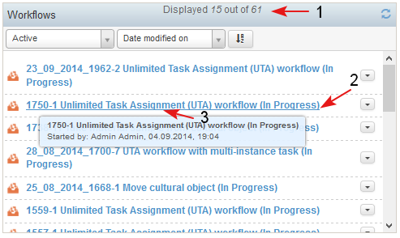
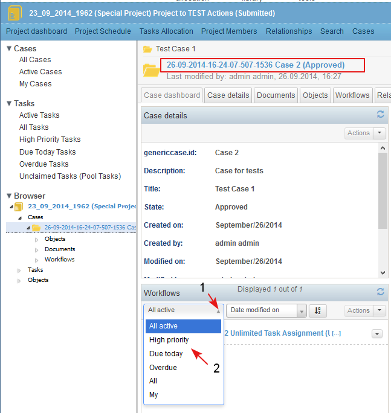

The Workflows dashlet is context dependent:
- In Personal dashboard the dashlet displays workflows started by the logged user, or workflows in which at least one task is assigned to him/her.
- In the Project Dashboard the dashlet displays information for workflows (running and completed) on project level. (All workflows that run directly on the project, or in cases in the project.)
- In the Case dashboard the dashlet displays information for all workflows (running or completed) in the case.
- In the header of the dashlet is displayed the number of workflows in the dashlet and the total number of all workflows of the same type to which the user has access (1).
- For each workflow in the dashlet there is information about: Workflow ID, Workflow Type, Workflow Status. They all are a link (2) to the corresponding workflow landing page.
- The tool tip (3) of each workflow displays more information about it (Started by, Created on).

- Next to each workflow in the dashlet there is a list with actions that could be performed on the workflow (1-2). The actions depends on the user permissions.

- The items in the dashlet may be sorted by the following criteria, selectable from the drop down list (1-2):
- Date modified on - this is the default sort criteria, descending order (the items recently created/ updated are on the top)
Title
Priority
Planned Start date
Planned End date
Status
- For each combination of criteria the user is able to sort the items in the dashlet in ascending or descending order (3).

Filters depending on the type of dashboard:
On Personal Dashboard/ My Workflows Dashlet are displayed only workflows in “active” status e.g., Submitted, Approved, In Progress, Suspended.
The following filters (1-2) are applied on the dashlet:
- Active workflows (default) - this is the default filter in the dashlet and when selected displays all workflows in Active state (Submitted, In progress, Approved, Suspended) which are created/ started by the current user OR there is at least one sub-task of the workflow which is assigned to the current user (regardless of the status of the task), including unclaimed pooled tasks.
- High priority workflows- this filter is the same as Active workflows filter, but displays only workflows with priority "High"
- Due today workflows - this filter is the same as Active workflows filter, but displays only workflows with Due date today.
- Overdue workflows - this filter is the same as Active workflows filter, but the filter displays only workflows with Due date prior today.

On Project Dashboard/ Workflows Dashlet are displayed all workflows created in the project.
- The following filters (1-2) to be applied on the dashlet:
- All active workflows (default) - this is the default filter in the dashlet and when selected displays all workflows in Active state which are created in the project and its cases.
- High priority workflows- this filter is the same as Active workflows filter, but the filter displays only workflows with priority "High".
- Due today workflows - this filter is the same as Active workflows filter but the filter displays only workflows with Due date today.
- Overdue workflows - this filter is the same as Active workflows filter, but the filter displays only workflows with Due date prior to today.
- All workflows - this filter displays all workflows in the project - both active, completed and stopped.
- My workflows - this filter displays all active workflows which are created by the current user, or there are tasks in the workflow assigned to him/ her.

On Case Dashboard/ Workflows Dashlet are displayed only workflows created in the case.
- The following filters (1-2) are applied on the dashlet:
- All active workflows (default) - this is the default filter in the dashlet and when selected displays all workflows in Active state which are created in the case
- High priority workflows- this filter is the same as Active workflows filter, but the filter displays only workflows with priority "High".
- Due today workflows - this filter is the same as Active workflows filter but the filter displays only workflows with Due date today.
- Overdue workflows - this filter is the same as Active workflows filter, but the filter displays only workflows with Due date prior to today.
- All workflows - this filter displays all workflows in the case - both active, completed and stopped.
- My workflows - this filter displays all acive workflows which are created in the case by the current user, or there are tasks in the workflow assigned to him/ her.

- Depending on the user's permissions and the case type (if the case allows running workflows), the user is able to select action/ s from the Case Dashboard/ Workflows dashlet (1-2).